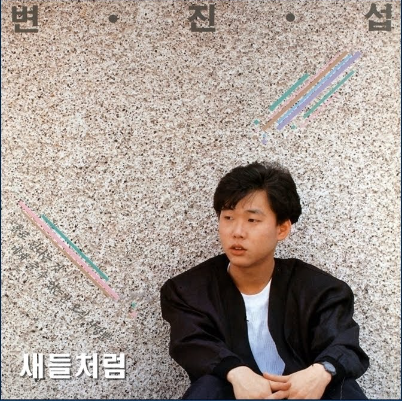

열린 공간 속을 가르며 달려가는 자동차와 석양에 비추인 사람들 어둠은 내려와 도시를 감싸고 나는 노래하네
눈을 떠보면 회색빛 빌딩사이로 보이는 내 모습이 퍼붓는 소나기 세찬 바람 맞고 거리를 헤메이네
무거운 하늘 희뿌연 연기사이로 보이는 아스팔트 답답한 도시를 떠나고 싶어도 나는 갈 수 없네
날아가는 새를 바라보면 나도 따라 가고 싶어 파란 하늘 아래서 자유롭게 나도 따라 가고싶어